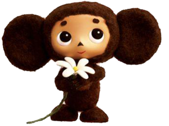
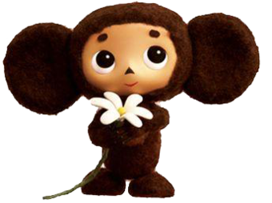

Привет , меня зовут Чебурашка!
Я расскажу вам мою историю.
Я расскажу вам мою историю.
Чебурашка с большими ушами и большими глазами впервые появился в мультфильме «Крокодил Гена» в 1969 году!
Чебурашкой зовут персонажа книги, написанной детским автором Эдуардом Успенским. По мотивам произведения «Крокодил Гена и его друзья» в 1969 году режиссером Романом Качановым снят фильм. Герой книги получил известность после выхода ленты в прокат.
Чебурашка – необычное существо. У него два огромных круглых уха, тело покрывает коричневая шерсть и не понятно, женский или мужской род у этого зверька. Его появление на свет произошло благодаря художнику-постановщику, Леониду Шварцману. После того как мультфильм перевели для показа в других странах, дети во всех уголках планеты узнали Чебурашку. По-английски его звали Топл, по-немецки – Куллерьхен или Плумпс, Дрюттэн по-шведски и Муксис по-фински. При этом дети не знали, кто создатель персонажа.